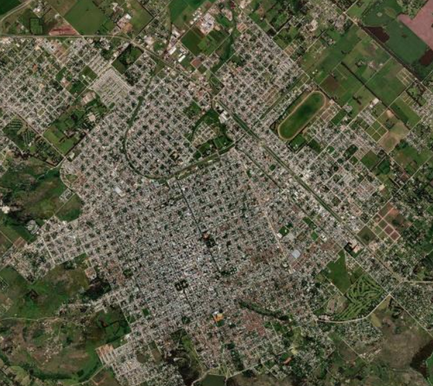

Métodos
FAUM: agrupamiento multidimensional
Algoritmo de agrupamiento no supervisado desarrollado en el grupo para datos de cuatro o más dimensiones, como los píxeles de imágenes satelitales multibanda. El orden cero construye hiper-histogramas; el orden uno agrupa hiper-bines por proximidad. Los órdenes dos y tres, en desarrollo, incorporan ajuste automático de parámetros y agrupamientos no lineales.